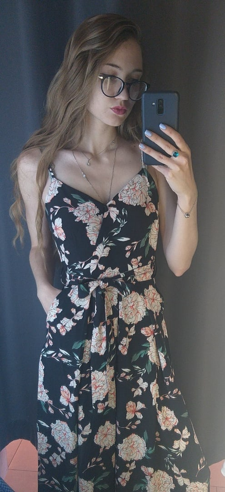

|  |
Новикова Снежанна Михайловна
23 года Начинающий перспективный программист В далёком 2018 году мною был окончен медицинский колледж по специальности "Сестринское дело". В моём представлении медицинская сестра- это глаза слепого, уши глухого, язык немого, руки и ноги тех, кто ими обделён. Однако, на деле всё оказалось не так радужно. Жизнь предоставила возможность стать программистом и я подумала: "Почему бы и нет?" Так начался мой путь в этой новой Вселенной Programming |
| Место работы | Должность | Года |
| Стоматогический центр "Жемчуг" | Ассистент стоматолога | 2017-2021 |
| Стоматогия на Октябрьской "Жемчуг+" | Ассистент стоматолога | 2021-2022 |
| Стоматогический центр "Кристалл" | Ассистент стоматолога/ Старшая медицинская сестра | 2022-now |